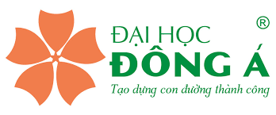

 Đại học Đông Á là một trường đại học dân lập tại thành phố Đà Nẵng, Việt Nam, là một đại học đào tạo đa ngành. Có sở 33 Xô Viết Nghệ Tĩnh - Đà Nẵng có tổng diện tích sàn 18.600m2, 10 tầng với 140 phòng chức năng. Trong đó có: 10 phòng thực hành CNTT, 15 phòng thực hành ngoại ngữ, 24 phòng thực hành nghề nghiệp, thư viện điện tử, hội trường và 7 giảng đường lớn. Trường đại học Đông Á phấn đấu trở thành trường đại học chất lượng quốc tế, trường có uy tín về đào tạo các nhà chuyên môn và quản lý điều hành, có nhiều nghiên cứu và chuyển giao công nghệ, đóng góp hiệu quả vào sự phát triển quốc gia và khu vực.